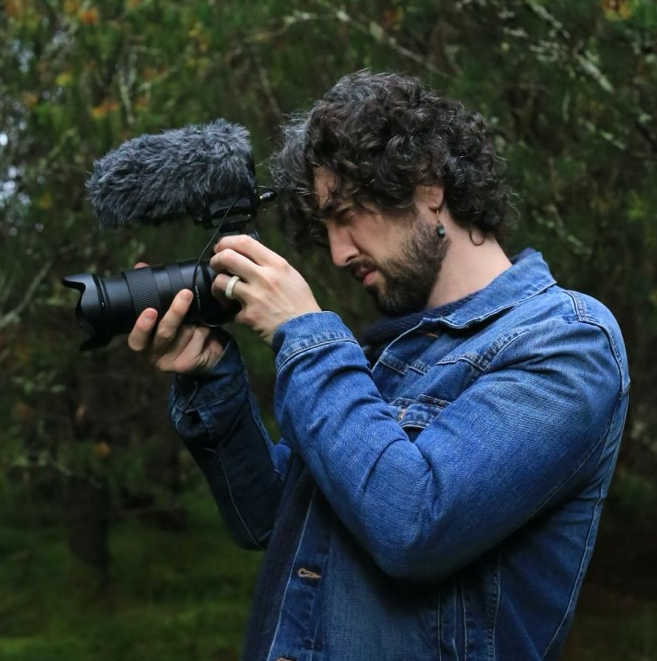

Hey there!
I'm a freelance videographer based in Caithness, North Scotland.
Originally from the Clwydian hills of North Wales, I spend my time exploring forests and sketching landscapes.
My commercial work focuses on the outdoor, lifestyle, tourism and wellbeing sectors. With a background in anthropology & journalism, my projects explore the impacts made on local culture and the surrounding environment, while fostering collaborations between organisations.
Alongside freelancing, I work regularly with Sidh C Art to produce ongoing marketing content.

Photo: Sìdh C Art
Contact
For businesses, events and storytelling projects across the Highlands and Islands of Scotland, please get in touch if you are interested in collaboration.